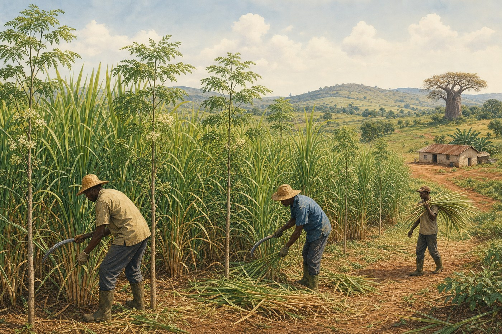
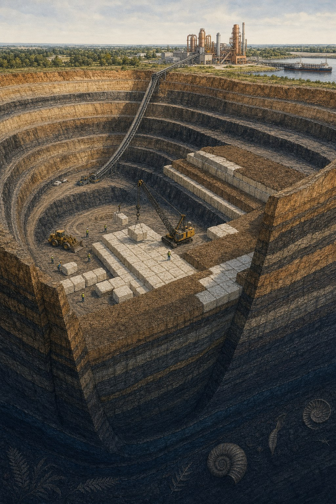
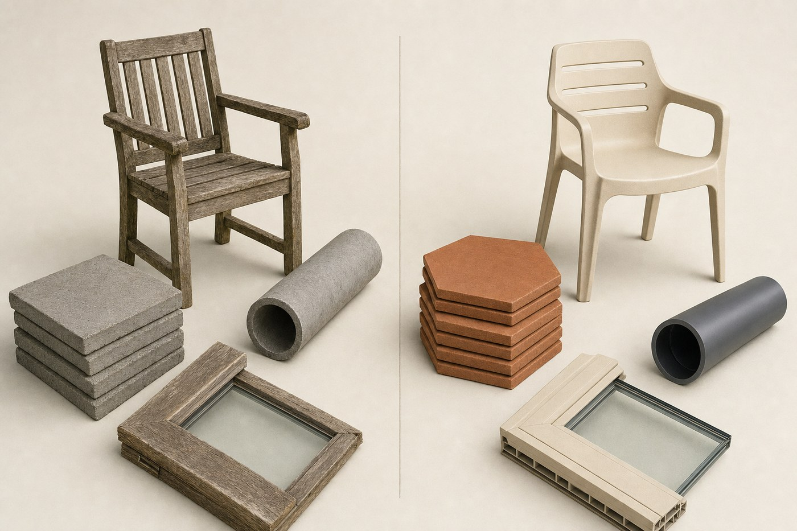
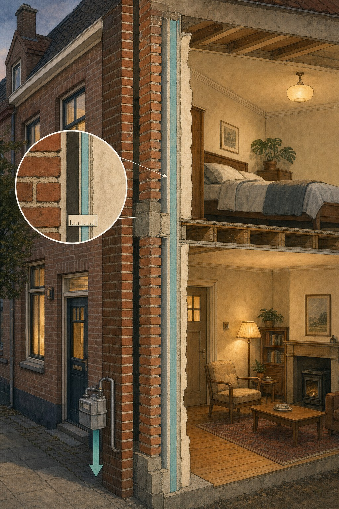

Denk eens aan de natuur, met de natuur als basis
Een integraal klimaat-, industrie- en handelsvoorstel voor de Nederlandse regering
Door Jacobus van Merksteijn — Het Open Vizier, augustus 2026
Nederland heeft de kennis, de industrie, de havens en de handelspositie om binnen twintig jaar de eerste klimaatnegatieve moderne economie van Europa te worden. Wat ontbreekt is niet technologie, geld of terrein — maar een samenhangende beleidsvisie die vier bewezen sporen combineert: tropische co-teelt in partnerlanden voor brandstof en voer, langlevend biobased plastic voor koolstofopslag, cement- en houtvervanging, en superieure isolatie uit polymeren. Dit advies zet die vier sporen op één lijn en maakt duidelijk waar de politiek moet ingrijpen.
1. Waar staan we
Nederland stoot circa 145 megaton CO2 per jaar uit. Het klimaatakkoord vraagt 55 procent reductie tegen 2030 ten opzichte van 1990, en klimaatneutraal in 2050. Met wind, zon, warmtepompen en isolatie alleen halen we deze doelen niet — dat is inmiddels breed erkend in de sector. Er is een aanvullend spoor nodig dat op grote schaal CO2 uit de atmosfeer haalt en op langere termijn opslaat.
De officiële EU-koers is CCS: CO2 afvangen bij industriële bronnen en injecteren in lege gasvelden onder de Noordzee. Kosten: 60 tot 120 euro per ton, met permanente monitoring, risico op lekkage en publieke weerstand. Nederland investeert miljarden in deze route — en er is een goedkopere, veiligere, robustere route naast.
2. Het voorstel in één beeld
Vier sporen die elkaar versterken en samen een gesloten koolstofcyclus vormen:
| Spoor | Wat | Effect |
|---|---|---|
| 1. Tropische co-teelt | Juncao-gras en Moringa-boom in Uganda/Mauretanië | Brandstof + voer + CO2-opname uit lucht |
| 2. Biobased plastic | Uit ethanol van dezelfde co-teelt | Vervangt fossiel plastic en slaat koolstof duizend jaar op |
| 3. Cement- en houtvervanging | Tegels, buizen, panelen, meubels uit dat plastic | Vermindert cement- en houtverbruik |
| 4. Polymeer-aerogel isolatie | Superisolatie uit hetzelfde polymeer | Twee tot drie keer beter dan huidige isolatie |
Alle vier de sporen delen dezelfde grondstof: koolstof, uit de atmosfeer gehaald door twee tropische planten. Elke ton biobased polymeer die uiteindelijk in geologische opslag belandt (bijvoorbeeld in de Duitse bruinkoolgroeves), verwijdert ongeveer drie ton CO2 permanent uit de atmosfeer.
3. Spoor 1: Tropische co-teelt

Op equatoriale gronden groeien twee planten samen. Giant Juncao is een reuzengras dat vijf meter hoog wordt in twee maanden en tot honderdveertig ton biomassa per hectare per jaar produceert — tien keer meer dan een Nederlands graanveld. Moringa is een boom met eiwitrijke bladeren die tussen de Juncao staat en de bodem met stikstof verrijkt.
Uit deze co-teelt komen vier producten tegelijk per hectare per jaar:
- Circa 30.000 liter bio-ethanol als brandstof voor personenauto's.
- Vier tot zes ton eiwitrijk veevoer dat sojameel uit Brazilië overbodig maakt.
- Grondstof voor biobased plastic (via ethanol → polymeer).
- Zestig tot honderdtwintig ton CO2 permanent onder de grond opgeslagen.
Om alle benzine-auto's in Nederland op deze bio-ethanol te laten rijden is 313.000 hectare nodig — twee derde van de provincie Groningen, in Afrika. In landen waar landbouwgrond marginaal wordt gebruikt en jongeren zonder werk zitten. Voor Uganda of Mauretanië levert dit honderdduizend tot honderdzeventigduizend arbeidsplaatsen op en bodemherstel op gedegradeerde grond.
4. Spoor 2: Plastic dat CO2 opslaat

Dit is het meest onbekende maar meest krachtige onderdeel van het voorstel. Het gaat tegen intuïtie in en tegen veel gangbaar milieubeleid, dus het verdient uitleg.
Plastic bestaat voor ruwweg 78 procent uit koolstof — het is een van de meest koolstofrijke materialen die de mens maakt. Wanneer plastic wordt verbrand, gaat die koolstof direct als CO2 de lucht in. Wanneer plastic wordt begraven of gestort in een afgesloten, chemisch inerte omgeving — bijvoorbeeld tweehonderd meter diep in een gesloten bruinkoolgroeve — blijft die koolstof duizenden jaren stabiel. Polyethyleen-folie uit de jaren 1950 wordt vandaag nog intact teruggevonden in bodems.
De implicatie is groot: als we het plastic maken uit koolstof die we uit de atmosfeer hebben gehaald (biobased), en het aan het einde van zijn levensduur opslaan in de grond, hebben we netto CO2 uit de atmosfeer verwijderd. Elke ton biobased polyethyleen die zo wordt behandeld haalt ongeveer 3,1 ton CO2 permanent uit de lucht.
Dit is niet nieuw of theoretisch. Nederland heeft in 1994 een vergelijkbare beleidsomslag gemaakt: groente-, fruit- en tuinafval mocht niet meer worden verbrand, maar moest gaan naar compost en biogas. Dat besluit veranderde één regel in de afvalwet en heeft het Nederlandse afval-systeem fundamenteel verduurzaamd. Voor plastic is precies dezelfde regelwijziging nodig: verplaats het van 'huishoudelijk restafval' naar 'gecertificeerde ondergrondse opslag onder CRCF'.
Wat we niet moeten doen: composteerbaar bioplastic
Veel milieubeleid promoot composteerbare bioplastics (PLA, PHA). Voor koolstofopslag is dit een fout. Deze plastics zijn ontworpen om binnen jaren of decennia af te breken — dan geven ze hun opgeslagen koolstof terug aan de atmosfeer. Voor eenmalig gebruik lijkt dat een oplossing, maar het is een lus die niets oplost: koolstof gaat rond, komt niet uit de atmosfeer weg.
Voor CO2-opslag hebben we juist het tegenovergestelde nodig: langlevend, niet-afbreekbaar biobased plastic. Bio-polyethyleen (Braskem produceert dit al commercieel in Brazilië), bio-polypropyleen, bio-PET, en polyethyleen-furanoaat (PEF, in ontwikkeling door Avantium in Delfzijl). Chemisch identiek aan hun fossiele tegenhangers, maar met koolstof uit lucht.
De fiscale kant
Nederland betaalt sinds 2021 aan de EU een boete van 0,80 euro per kilogram niet-gerecycled plasticafval — in 2024 was dat 235 miljoen euro. Tegelijkertijd betalen we voor de CO2-uitstoot van de plastic-verbranding via ETS nog eens 99 miljoen euro. Totaal: 334 miljoen euro per jaar aan strafheffingen op iets waarvoor we een koolstof-certificaat van 99 miljoen zouden moeten krijgen. Fiscale omkering: circa 433 miljoen euro per jaar.
5. Spoor 3: Cement en hout vervangen

Cement is verantwoordelijk voor 7 tot 8 procent van de mondiale CO2-uitstoot. Elke ton cement stoot ruim 900 kilogram CO2 uit. Een groot deel van wat we van cement maken kan worden vervangen door polymeren uit de Juncao-keten: tegels, buizen, kozijnen, panelen, dakpannen, straatmeubilair. Draagconstructies (funderingen, kolommen) blijven cementbeton, maar de niet-dragende cement-elementen zijn vervangbaar met 50 tot 90 procent minder CO2-uitstoot.
Ook hout kan slimmer worden vervangen. Een houten tuinstoel stoot in zijn productie 224 kilogram CO2 uit; een gelijkwaardige stoel uit gerecycled polyethyleen 18,6 kilogram — factor 12 verschil. Bovendien gaat de plastic stoel 25 tot 50 jaar mee tegen 3 tot 8 jaar voor zachthout. Voor de Nederlandse tuinmeubelmarkt betekent overstap orde-grootte 200 tot 300 kiloton CO2-besparing per jaar en circa één miljard gerecyclede plasticflessen.
Voor houten wegwerpbestek in vliegtuigen — dat sinds de EU-richtlijn tegen single-use plastics steeds vaker wordt gebruikt — geldt een specifiek probleem: catering-afval uit vliegtuigen moet wettelijk verplicht worden verbrand (ICW categorie 1). Sorteren voor compostering mag niet. Houten bestek in vliegtuigen is dus per definitie een CO2-uitstoter: koolstof uit gekapte bomen wordt direct via de verbrander de atmosfeer in gestuurd. Biobased plastic-bestek met een CRCF-koppeling naar geologische opslag zou hier een netto CO2-verwijdering opleveren.
Papier is een derde categorie waar de heersende beleidslogica omgekeerd staat. Bij volledige inrekening van bosverlies, productie, transport, recycling-verwerking en einde-levensduur-verbranding is papier vaak 8 tot 20 keer vervuilender dan gerecycled plastic. Kranten die overstappen op plastic verpakking in plaats van papier reduceren hun CO2-voetafdruk substantieel, ondanks de publieke perceptie dat het omgekeerd is.
6. Spoor 4: Superisolatie uit plastic

Aerogel is het meest efficiënte isolatiemateriaal dat we kennen: bestaat voor 90 tot 99 procent uit lucht in nanoporiën. Traditioneel wordt aerogel gemaakt van silica, maar er bestaan ook polymeer-aerogels: uit polyurethaan, polyimide, PVC. Bij dezelfde isolatie-waarde is de laagdikte 40 tot 60 procent dunner dan bij steenwol of piepschuim.
Uit de Juncao-keten kan biobased polymeer-aerogel worden geproduceerd. Levensduur in een gebouw: 50 jaar of meer. Daarna geologische opslag onder CRCF. Elk gebouw wordt zo een actieve CO2-opslag én een superisolerend geheel, met dunnere wanden en meer bruikbare vloeroppervlakte.
Voor renovatie van bestaande woningen (waar dikkere isolatie vaak niet past) is dit doorslaggevend. Nederland heeft ongeveer 8,4 miljoen woningen, waarvan een aanzienlijk deel voor 1990 is gebouwd. Aerogel-renovatie zou het gemiddelde gasverbruik van 987 kubieke meter per woning per jaar substantieel kunnen verlagen.
7. Wat de overheid moet doen
Zes concrete stappen. Ze kunnen in de eerstvolgende regeerperiode beginnen.
Stap 1: Certificeringskader vaststellen
Opdracht aan het RIVM of een onafhankelijk certificeringsinstituut, in samenwerking met Puro.earth of Verra: ontwikkel binnen twaalf maanden een geaccrediteerde methodologie voor koolstofopslag via biobased plastic in geologische bergingen. Nederlandse universiteiten zijn geen contractpartij (zie stap 6). Zonder methodologie geen certificaten, en zonder certificaten geen financiering.
Stap 2: Wetswijziging plastic-afval
Wijziging van het Besluit stortverbod afvalstoffen: plastic dat aantoonbaar naar gecertificeerde geologische opslag gaat, wordt niet langer als 'restafval' geclassificeerd. Fasering: 20 procent in jaar 1 (2027), 40 procent in 2028, 100 procent in 2031. Analoog aan de biomassa-verplaatsing van 1994.
Stap 3: Pilot in Uganda of Mauretanië
Financiering via het Klimaat- en Transitiefonds voor een pilot van 2000 hectare Juncao-Moringa co-teelt. Uitvoering: RVO, Ministerie van Buitenlandse Zaken en Ministerie van Landbouw van het partnerland, samen met lokale coöperaties en het Chinese Juncao-instituut (FAFU) als technische partner. Geen Nederlandse universiteit als contractpartij.
Stap 4: Onderhandeling in Brussel
Nederland moet in de EU vier wijzigingen bepleiten:
- CRCF (Carbon Removals Certification Framework 2024) uitbreiden met plastic-in-geologische-opslag als erkende koolstofverwijdering. Nu erkennen ze biochar, DAC en Bio-CCS; plastic-opslag ontbreekt zonder fysische reden.
- Differentiatie van de plastic-heffing 2021: verbrand plastic behoudt of verhoogt de heffing, geologisch opgeslagen plastic krijgt vrijstelling en een koolstofcertificaat.
- Uitzondering op de EU single-use-plasticrichtlijn (2019/904) voor biobased langlevend plastic met CRCF-koppeling.
- Uitzondering op verordening 1069/2009 (ICW categorie 1) voor gecertificeerd biobased plastic uit vliegtuigcatering naar directe CRCF-opslag.
Stap 5: Nationaal biobased-polymeerfonds
Uit de fiscale omkering van 334 miljoen euro per jaar (plastic-heffing plus vermeden ETS-lasten) een fonds oprichten voor drie doelen: prijscompensatie voor biobased langlevend polymeer in producten, R&D naar directe katalytische omzetting (biomassa naar monomeer zonder fermentatie), en aanleg van gecertificeerde geologische opslag-faciliteiten. Nederlandse industrie (Chemelot, Sittard-Geleen, Delfzijl) heeft de basisinfrastructuur al.
Stap 6: Waarschuwing IP-risico Nederlandse universiteiten
Vóór alle andere stappen: geen Nederlandse universiteit als contractpartij, IP-houder of hoofdaannemer in dit programma. Dit is geen ideologisch standpunt maar volgt uit een concreet gedocumenteerd precedent.
In augustus 2022 publiceerde Carbon-Alert (Hengelo, ondergetekende) via PR Newswire, ANP en BNNVARA Vroege Vogels de kern van dit voorstel: Giant Juncao als CO2-opslag via diepte-injectie en peatland-analogie. In dat bericht werd Albert van den Berg, directeur MESA+ van de Universiteit Twente, geciteerd als consortiumpartner. Op 24 februari 2025 publiceerde het UT Climate Centre twee pagina's op utwente.nl met precies deze kernclaims als eigen onderzoek — zonder vermelding van Carbon-Alert, van ondergetekende, van de Chinese ontwikkelaar Lin Zhanxi (FAFU), of van Lei Xuejun (Central South University) die de CO2-opnamecapaciteit ontdekte.
Dit is geen incident maar volgt uit de landelijke IP-regelingen van Universiteiten van Nederland. Externe kennis die met een NL-universiteit wordt gedeeld, loopt structureel het risico onder universitaire eigendomsclaim te komen. Voor een programma dat honderden miljoenen euro publiek geld gaat inzetten op deze kennis is dat een onaanvaardbaar risico. Certificeringsopdrachten gaan naar RIVM of onafhankelijke instituten; technisch partnerschap rechtstreeks met FAFU (China) en KZN Department of Agriculture (Zuid-Afrika). Als een NL-universiteit alsnog wordt betrokken voor specifieke analyses (bijvoorbeeld LCA), dan uitsluitend onder contract-onderzoek waarin het intellectueel eigendom expliciet bij Carbon-Alert / het programma blijft.
8. Wat het oplevert
Bij volledige uitrol over 15 tot 20 jaar:
| Effect | Waarde | Toelichting |
|---|---|---|
| Ethanol voor NL wagenpark | 9,4 miljard liter/jaar | Volledige vervanging fossiele benzine |
| Vermeden olie-import | 6 miljard euro/jaar | Op huidig prijsniveau |
| CO2-opname bovengronds bruto (313.000 ha) | 47-64 megaton/jaar | 150-203 ton/ha, Juncao+Moringa |
| CO2 permanent in bodem via wortels (313.000 ha) | 7-12 megaton/jaar | 23-39 ton/ha |
| Fiscale omkering plastic-heffing | 434 miljoen euro/jaar | Van betalen aan Brussel naar certificaten |
| Arbeidsplaatsen in partnerlanden | 100.000-170.000 | Uganda, Mauretanië en anderen |
| Nederlandse industriële groei | Chemelot, Delfzijl, havens | Biobased polymeer-productie |
Dit is geen vervanging van al het klimaatbeleid. Het is een aanvulling die vier problemen tegelijk oplost: klimaatdoelen, energiezekerheid, industriële toekomst en handelspositie. Voor Nederland, met zijn havens, chemische industrie en handelsgeschiedenis, past dit pakket beter dan bij welk ander EU-land.
9. Waarom nu
Er is een tijdvenster van misschien vijf jaar. China ontwikkelde de Juncao-plant sinds 1983 en heeft er inmiddels 45 varianten van. Zuid-Afrika teelt hem sinds 15 jaar in KwaZulu-Natal. De EU-CRCF is in 2024 vastgesteld en wordt de komende jaren met invullingsdetails gevuld — nu is het moment om plastic-opslag daaraan toe te voegen. De koolstofcertificaten-markt beweegt richting 125-150 euro per ton, wat de teelt en opslag financieel zelfdragend maakt na de eerste 2000 hectare pilot.
Als Nederland nu instapt, maken we de standaarden. Als we wachten tot Duitsland of Frankrijk of de VS het initiatief nemen, worden we importland van hun technologie en betalen we hun prijzen.
10. Slotwoord
Nederland heeft twee opties. De eerste: doorgaan op de huidige weg. Miljarden aan waterstofinfrastructuur, CCS in gasvelden, elektrische auto's op gemengde stroom, en hopen dat we in 2050 iets in de buurt van klimaatneutraliteit halen.
De tweede: erkennen dat de natuur al 200 miljoen jaar CO2 uit de lucht haalt en onder de grond opslaat — dat proces heet veenvorming — en dat we alleen maar hoeven te versnellen met twee tropische planten en één regelwijziging voor plastic. De koolstof uit de lucht wordt eerst brandstof, dan voer, dan verpakking, dan bouwelement, dan isolatie, en uiteindelijk permanent onder de grond. Een gesloten cyclus. Met economische opbrengst in plaats van kosten. Met werkgelegenheid in ontwikkelingslanden in plaats van olie-import uit onvoorspelbare regio's.
De rekensom is klaar. De technologie is bewezen. Alleen de politieke wil ontbreekt nog.
Dit advies is een samenvatting van het interne onderzoeksdocument 'Juncao-Moringa als geïntegreerde klimaat- en waardeketen — versie 13' (augustus 2026), en van twee eerdere Open Vizier-artikelen over de plastic-doctrine: 'De plastic-boete die een carbon-credit had moeten zijn' (juli 2026) en 'Aan het eind hebben we niets meer' (juli 2026). Alle kwantitatieve claims in dit advies zijn onderbouwd tegen primaire bronnen in het onderzoeksdocument; waar onzekerheden bestaan, zijn deze in het advies expliciet benoemd.
Het Open Vizier, augustus 2026. Auteur: Jacobus van Merksteijn. Voor het volledige rapport met alle onderbouwing en bronvermelding zie het onderliggende werkdocument.